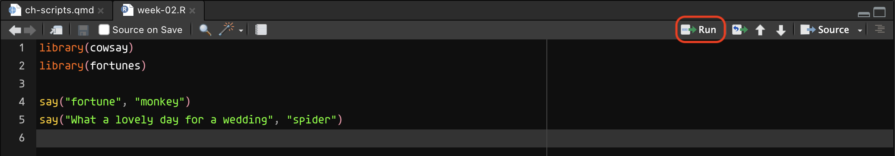

library(cowsay)
library(fortunes)
say("fortune", "monkey")
say("What a lovely day for a wedding", "spider")7 R scripts

In Chapter 4 and Chapter 5, you’ve been writing R code in the Console and run it there. But this is not a very efficient way of using R code. Every time, you need to write the code and execute it in the right order and it quickly becomes very difficult to keep track of everything when things start getting more involved. A solution is to use R scripts.
From now on, you should write all code in an R script, until you will learn about Quarto documents in Chapter 14.
7.1 Create an R script
First, create a folder called code in your Quarto project folder. You can do so in two different ways:
You can click on the
New Folderbutton in theFilespanel (bottom-right) in RStudio, set the name and clickOk. The folder will be created within the current folder shown in theFileslist.Since Quarto Projects are just folders on your computer, you can create a new folder as you would with any other folder from your computer File Explorer/Finder.
The code/ folder will be the folder where you will save all of your R scripts and other documents.
Now, to create a new R script, look at the top-left corner of RStudio: the first button to the left looks like a white sheet with a green plus sign. This is the New file button. Click on that and you will see a few options to create a new file.
Click on R Script. A new empty R script will be created and will open in the File Editor window of RStudio.

Note that creating an R script does not automatically save it on your computer. To do so, either use the keyboard short-cut CMD+S/CTRL+S or click on the floppy disk icon in the menu below the file tab.

Save the file inside the code/ folder with exactly the following name: week-02.R.
7.2 Write code
Now, let’s start filling up that script! Generally, you start the script with calls to library() to load all the packages you need for the script. Please, get in the habit of doing this from now, so that you can keep your scripts tidy and pretty! You will learn soon about the tidyverse packages in the following chapter so for now just attach the cowsay and fortune packages.
Go ahead, write the following code in the top of the .R script. (The code chunk has a convenient copy button in the top-right corner which appears when you place the cursor inside the chunk. If you click the button the code will be copied and you can then paste it in the script).
7.3 Running scripts
Finally, the time has come to run the script.
There are several ways of doing this. The most straightforward is to click on the Run button. You can find this in the top-right corner of the script window. Pressing Run will run the line of code your text cursor is currently on. So you should place the cursor back on line one and press Run. The code will be executed and you will see it in the Console. If the code returns any output, this will be shown in the Console too. After the line of code is executed, the text cursor moves to the next line. You can click on Run again and so on to run each line one by one. You can also just select all the code (like you would when selecting text in a text editor) and click Run: in this case, all of the code is run, line by line, in the order they appear in the script.

An alternative way is to place the text cursor on the line of code you want to run and then press CMD+ENTER/CTRL+ENTER. As with clicking Run, this will run the line of code and move the text cursor to the next line of code. It also works with a selection, like the Run button. Now that you know how to use R scripts and run code in them, I will assume that you will keep writing new code in your script and run it from there.
7.5 Ensuring the script runs
That’s all there is to know about using R scripts. You write code and some comments and you can run code in the script and see the output in the Console. However, there is an important aspect that was not explicitly mentioned above: a script is supposed to work from top (first line) to bottom (last line), so the order of the code in the script matters. A good habit to get into is to restart the R session every now and then and re-run the entire script. To restart the R session you can either go to the Session menu > Restart R or you can press SHIFT+CMD/CTRL+0 (the last key is “zero”). Try this now. Restart the R session and run your script again.
But why it is important to restart the session to verify that the script runs? A typical case of scripts that don’t run is when you call a variable in a function before having declared the variable (with <-) or when you call a function without having attached the package the function is from. However, an R session remembers everything you run: if you try to run code with a non-declared variable (like sum(a, 1), but a is not declared) you will get an error; if you now write the code that declares the variable (a <- 3) but you put it after the line of code that uses the variable, the code will run because now the variable is declares and available in the session. If you keep the code this way and restart the session, the code will no longer work. This is because each line is executed in order and by the time R gets to the sum(a, 1) , the line a <- 3 hasn’t been executed yet so a is not available. This example might seem trivial (and it is) but with more complex scripts it is actually quite easy to do things like this (calling a variable on line 10 of the script while it is declared on line 1263).
7.4 Comments
Sometimes we might want to add a few lines of text in our script, for example to take notes. You can add so-called comments in R scripts, simply by starting a line with
#. You can also add trailing comments, by adding a#at the end of a line of R code. For example:Text that starts with a hash symbol
#in an R script is a comment. Comments are not executed.Is the following a valid line of R code?
It is a valid line of R code with a trailing comment. If you tried to run it in the
Consoleand got an error it is because the variablexdoes not exist (unless you had created one earlier). If you add the linex <- 4beforesum(x + 2) # x = 4, the latter will work just fine.So you see there is a difference between valid code and working code.